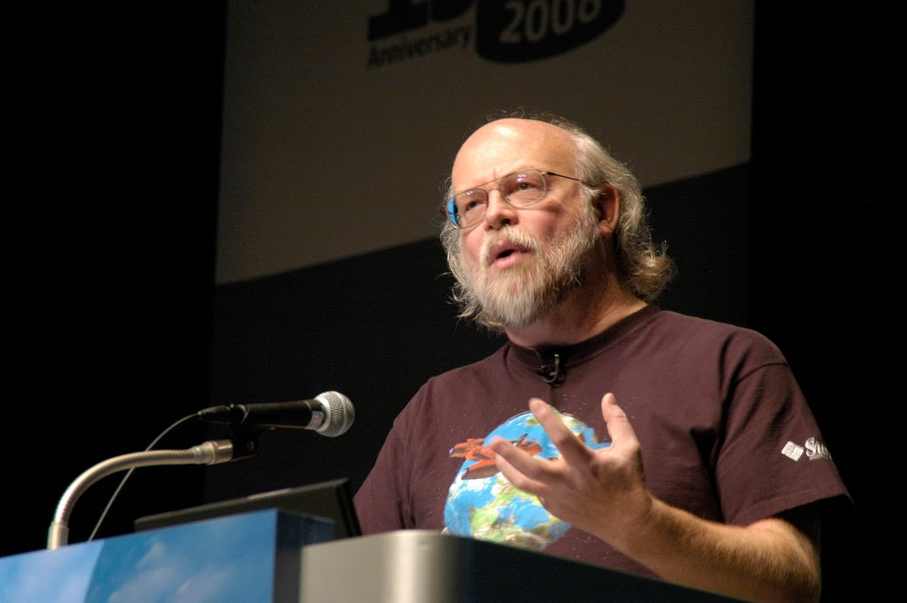
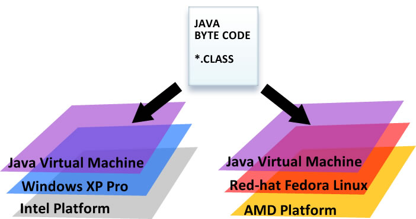
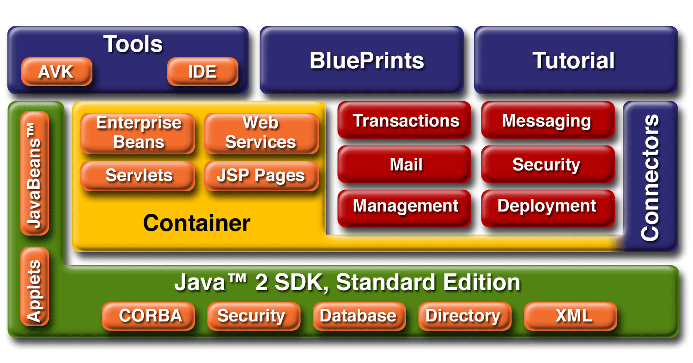
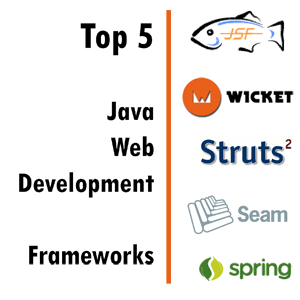
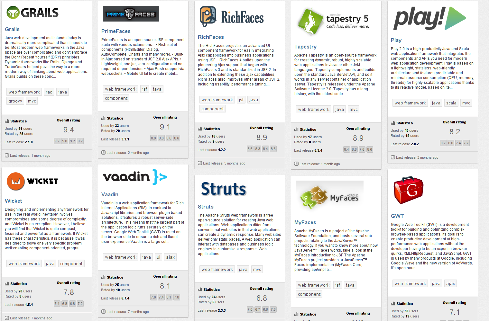

Introducción a Java
González - Moreira - Videla
otoño/invierno de 2013
González - Moreira - Videla
otoño/invierno de 2013

public int factorial(int n) {
int resultado = 1;
for (int i = 2; i <= n; i++){
resultado = resultado ∗ i;
}
return resultado;
}
Se describe cómo ejecutar el algoritmo
(defun factorial (n)
(if (<= n 1) 1 (∗ n (factorial (− n 1))))
)
Se describe la función como elemento principal
fac(0, 1).
fac(N, F) :− N > 0,
M is N − 1,
fac(M, Fm),
F is N ∗ Fm.
Se describen las relaciones y restricciones del problema
List<Auto> listado = new LinkedList<Auto>();
Se pueden flexibilizar tipos de datos para los atributos de las clases

La Java Virtual Machine es una máquina abstracta. Su especificación la provee el entorno de ejecución, donde el bytecode se puede ejecutar.
Es un acrónimo de Java Runtime Environment. Se utiliza para proveer el entorno de ejecución. Es la implementación de la JVM, existe físicamente y contiene las bibliotecas y otros archivos que Java utiliza en tiempo de ejecución.
Es el acrónimo de Java Development Kit, y se compone por la JRE y algunas herramientas de programación, como ser javac, javadoc, entre otras.


